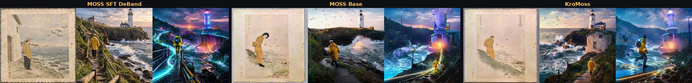
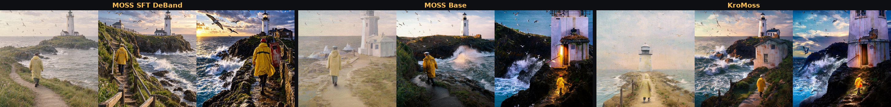
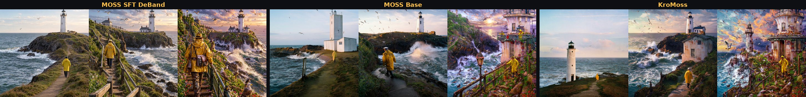
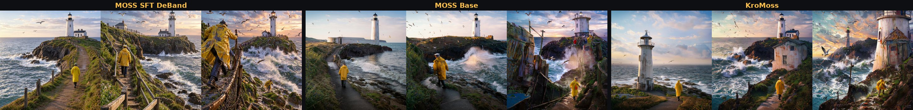
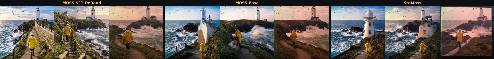
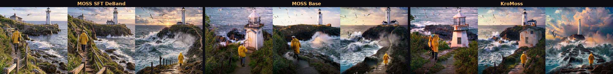
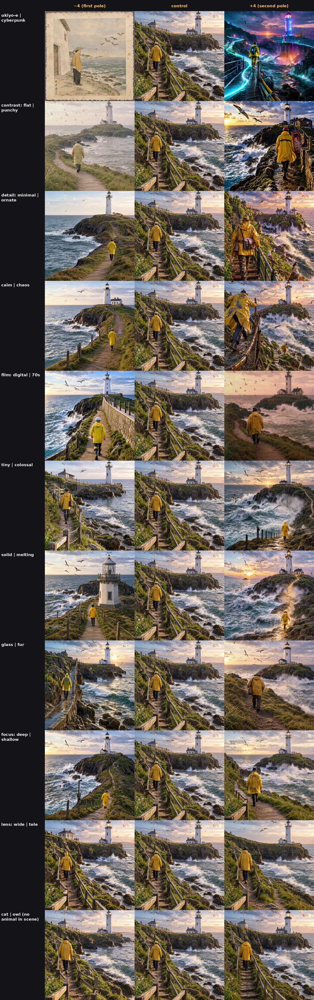

MOSS-Image Dials
Made once, on three models.
Dials work on MOSS-Image too. These six were made with Make Dial from prompt pairs on MOSS SFT DeBand, then applied unchanged to MOSS Base and KroMoss. Every image uses the same prompt (a lighthouse keeper on a rocky coast, a scene none of the pairs mention) and the same seed. 1024×1024, 25 steps, cfg 3.
style continuumUkiyo-e ↔ cyberpunk
The strongest one. At −4 the scene becomes an Edo-style woodblock print on aged paper (on Base and KroMoss a proper figure drawing); at +4 a neon cyberpunk night with a glowing lighthouse and light-trail paths. Works on all three models.

Each model: −4 · control · +4. Same prompt and seed throughout.
The prompt pairs that made it
# A: Edo-period ukiyo-e woodblock print | B: neon cyberpunk
{subject}, an Edo-period ukiyo-e woodblock print, flat colours and bold outlines. ||| {subject}, a neon cyberpunk scene, glowing signs and rain-slick reflections.
{subject}, in the style of a traditional Japanese woodblock print. ||| {subject}, in a futuristic cyberpunk style with holograms and neon light.
{subject}, a classic ukiyo-e composition on washi paper. ||| {subject}, a high-tech cyberpunk image, electric pink and cyan.{subject} runs over six scenes: An elderly fisherman mending a net on a wooden dock; A quiet suburban street with parked cars; A bowl of fruit on a kitchen table; A mountain lake surrounded by pine trees; A young woman reading in a café; A vintage bicycle leaning against a brick wall.
image lookContrast: flat ↔ punchy
−4 hazy, pale and washed out; +4 deep blacks, bright highlights, a fiery sky. On Base and KroMoss −4 goes all the way to a white fog: use about half the strength there.

Each model: −4 · control · +4. Same prompt and seed throughout.
The prompt pairs that made it
# A: soft flat low contrast | B: punchy high contrast
{subject}, a soft, flat, low-contrast photograph with gentle muted tones and lifted grey shadows. ||| {subject}, a punchy, high-contrast photograph with deep black shadows and bright crisp highlights.
{subject}, photographed in hazy, even light, everything soft and washed out. ||| {subject}, photographed in hard light, strong contrast, inky blacks and brilliant whites.
{subject}, a low-contrast matte image with pale, milky tones. ||| {subject}, a high-contrast image with dramatic, bold darks and lights.{subject} runs over six scenes: An elderly fisherman mending a net on a wooden dock; A quiet suburban street with parked cars; A bowl of fruit on a kitchen table; A mountain lake surrounded by pine trees; A young woman reading in a café; A vintage bicycle leaning against a brick wall.
image lookDetail: minimal ↔ ornate
−4 a bare headland and simple shapes; +4 a satchel, gear, flowers and perched gulls, and on KroMoss a filigreed, flower-covered lighthouse.

Each model: −4 · control · +4. Same prompt and seed throughout.
The prompt pairs that made it
# A: minimal, sparse | B: intricate, ornate
{subject}, a minimal, sparse composition with clean empty space and simple shapes. ||| {subject}, an intricate, ornate composition packed with fine detail and decoration.
{subject}, pared back and uncluttered, very few elements. ||| {subject}, richly detailed, every surface patterned and embellished.
{subject}, calm minimalism, plain surfaces. ||| {subject}, maximalist abundance, layered ornament everywhere.{subject} runs over six scenes: An elderly fisherman mending a net on a wooden dock; A quiet suburban street with parked cars; A bowl of fruit on a kitchen table; A mountain lake surrounded by pine trees; A young woman reading in a café; A vintage bicycle leaning against a brick wall.
abstractCalm ↔ chaos
−4 a quiet path; +4 the keeper scrambling over the rail with more gulls and people, and on Base and KroMoss clutter piled onto the cliff.

Each model: −4 · control · +4. Same prompt and seed throughout.
The prompt pairs that made it
# A: calm, still, orderly | B: chaotic, crowded, frantic
{subject}, calm, still and orderly, a peaceful, quiet moment. ||| {subject}, chaotic, crowded and frantic, a noisy, overwhelming moment.
{subject}, serene and uncluttered, nothing moving. ||| {subject}, a jumble of motion, objects and people everywhere.
{subject}, tranquil and balanced. ||| {subject}, wild and disordered.{subject} runs over six scenes: An elderly fisherman mending a net on a wooden dock; A quiet suburban street with parked cars; A bowl of fruit on a kitchen table; A mountain lake surrounded by pine trees; A young woman reading in a café; A vintage bicycle leaning against a brick wall.
eraFilm: clean digital ↔ 1970s
+4 is warm and faded on all three; KroMoss even adds a print border. −4 is crisp modern daylight.

Each model: −4 · control · +4. Same prompt and seed throughout.
The prompt pairs that made it
# A: clean modern digital photo | B: 1970s analog film photo
{subject}, a clean, modern digital photograph, sharp, neutral colours. ||| {subject}, a 1970s analog film photograph, warm faded colours and visible film grain.
{subject}, crisp contemporary photo, true-to-life colour. ||| {subject}, an old Kodachrome snapshot, nostalgic tones and soft grain.
{subject}, a pristine high-resolution digital image. ||| {subject}, a vintage print from a film camera, slightly faded and grainy.{subject} runs over six scenes: An elderly fisherman mending a net on a wooden dock; A quiet suburban street with parked cars; A bowl of fruit on a kitchen table; A mountain lake surrounded by pine trees; A young woman reading in a café; A vintage bicycle leaning against a brick wall.
scaleTiny ↔ colossal
+4 is monumental: huge waves, a tiny figure. The tiny side only shows on Base and KroMoss, where −4 gives a little toy-like lighthouse.

Each model: −4 · control · +4. Same prompt and seed throughout.
The prompt pairs that made it
# A: tiny tabletop miniature | B: colossal monumental scale
{subject}, a tiny tabletop miniature, toy-like, seen up close with tilt-shift blur. ||| {subject}, colossal and monumental, towering over everything, seen from far below.
{subject}, a small handmade model on a desk. ||| {subject}, a gigantic structure the size of a mountain.
{subject}, a diorama small enough to hold in your hand. ||| {subject}, immense scale, tiny people dwarfed beside it.{subject} runs over six scenes: An elderly fisherman mending a net on a wooden dock; A quiet suburban street with parked cars; A bowl of fruit on a kitchen table; A mountain lake surrounded by pine trees; A young woman reading in a café; A vintage bicycle leaning against a brick wall.
everything we triedAll eleven on DeBand
The full first batch, misses included. The two optics dials (deep ↔ shallow focus, wide ↔ telephoto) mostly reframe the shot; glass ↔ fur and solid ↔ melting are partial and odd (wet glossy stone, a path dissolving into mist); cat ↔ owl does nothing here because the scene has no animal in it.

notesWhat to know
- MOSS needs more strength than H3. Classifier-free guidance pushes the negative prompt too, which halves a dial, so on MOSS SFT DeBand ±4 is a clear effect. MOSS Base and KroMoss react about twice as strongly at the same strength, so start around ±2 there.
- One dial file works across the MOSS family. All six were made on DeBand and still steer Base and KroMoss.
- The subject has to be in the scene. A creature dial (cat ↔ owl) does nothing to a lighthouse.
- One prompt, one seed. These are leads, not measured ranges.
Settings: ER-SDE sampler (max stage 3, eta 1.0, noise 1.05), simple scheduler, 25 steps, cfg 3, negative
prompt "worst quality, bad anatomy, watermark, jpeg artifact". Dials made with ComfyUI-MAINodes Make Dial (post-refiner
hook on MOSS's text_embedder, debias on). The dial files are not released yet.